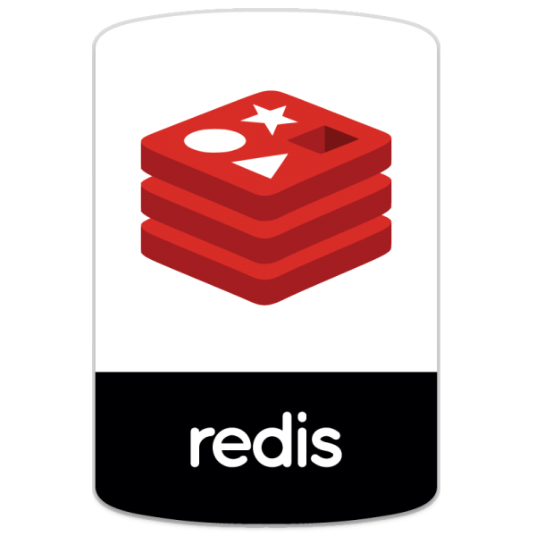

---> ec2 where the "logical" part is based
---> s3 bucket where are stored my pictures visible in /photos
using the AWS SDK for PHP to display them:
(installed with  )
)
---> RDS as a dedicated DB instance using  to save more rich textual values like which is visible in /tips
and therefore be able to perform easier search.
to save more rich textual values like which is visible in /tips
and therefore be able to perform easier search.
--->CodeDeploy to update seamlessly and automatically content modified from my local machine to my public repo then finally to push to the production ec2 instance
-  as the registrar and DNS system
as the registrar and DNS system
- A development version of  to be able to use here you can check the report details of my domain (arthur.xn--grgoi-csa.re)
to be able to use here you can check the report details of my domain (arthur.xn--grgoi-csa.re)
-  as server sided scripted language and using the PPA of Ondřej Surý:
ppa:ondrej/php-7.0
in FPM mode and with APCu Support enabled as server byte code cache.
See the phpinfo();
as server sided scripted language and using the PPA of Ondřej Surý:
ppa:ondrej/php-7.0
in FPM mode and with APCu Support enabled as server byte code cache.
See the phpinfo();
-  to record user agent datas hits on index page and visible here
-  with
with  on the page that embeds the google map
XML again with PHP on the not referenced and protected page /musicLib
on the page that embeds the google map
XML again with PHP on the not referenced and protected page /musicLib
- in the /video url and working the best with firefox
- agent and probe are installed and running but waiting for NewRelic to be compatible with Php7
-  is up and running but not yet in use :(
is up and running but not yet in use :(